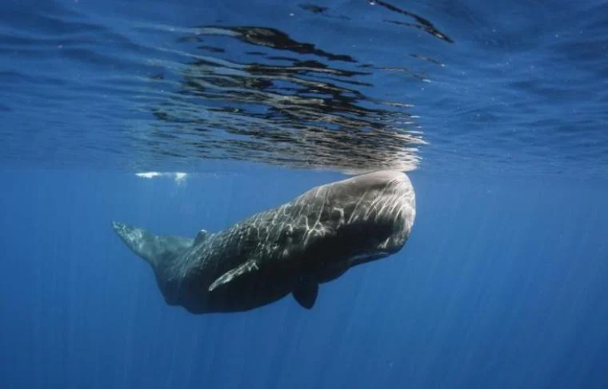
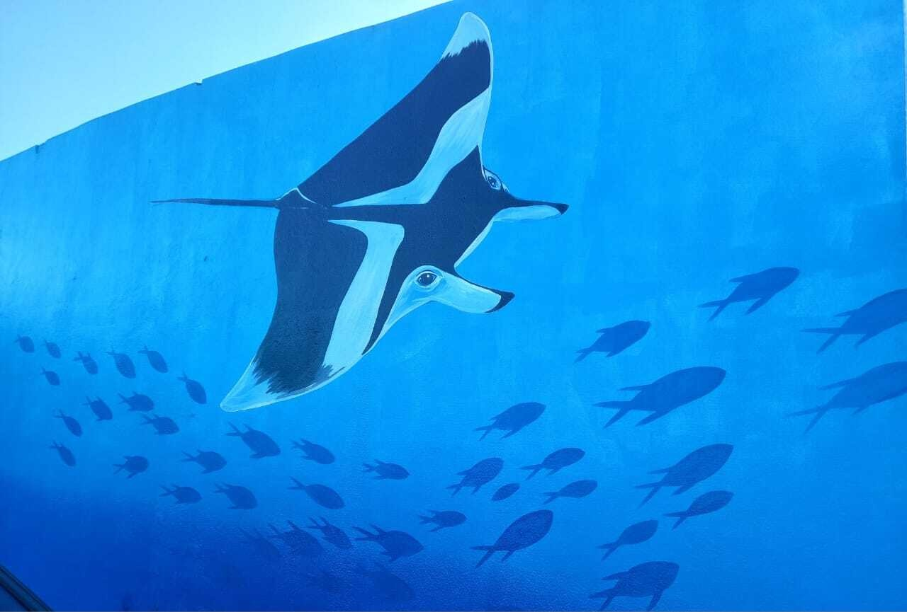
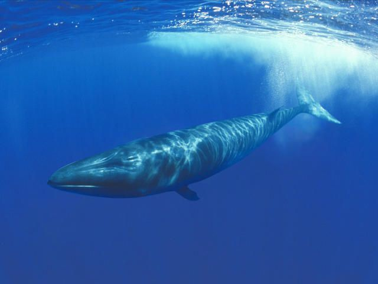

Consequências da Extinção
A poluição dos mares, rios e represas e o aquecimento global vêm contribuindo para o perigo de extinção de alguns animais marinhos. Segundo o IBAMA (Instituto Brasileiro do Meio Ambiente e dos Recursos Naturais), mais de 30 espécies de animais aquáticos invertebrados correm risco de extinção. Já a lista de peixes ameaçados de desaparecer da natureza supera a marca de 100 subespécies.

Peixe-Boi da Amazônia. (Imagem: ampa.org).
O Peixe-Boi da Amazônia (Trichechus inunguis) é a menor espécie de peixe-boi do mundo, é uma espécie é exclusiva dos rios da Bacia Amazônica. Ele é herbívoro, alimenta-se de grande variedade de plantas aquáticas e semi-aquáticas, contribui para a ciclagem de nutrientes nos rios e controle de plantas aquáticas nos lagos, que dificultaria a entrada de luz solar nos rios e até mesmo o transporte de pequenas embarcações. No Brasil, mesmo protegido por lei desde 1967, continua sendo caçado para subsistência de comunidades ribeirinhas, mas principalmente para manter um comércio ilegal da carne em diversos mercados da região amazônica. A degradação do habitat em virtude dos desmatamentos, assoreamento nas margens dos rios e construções de hidrelétricas são ameaças relevantes. Por conta disso, no Brasil e no Mundo, a espécie é considerada ameaçada de extinção na categoria Vulnerável (lista IUCN).

Cachalote (imagem: brasil.oceana.org)
Os cachalotes (Physeter macrocephalus) são a maior espécie dentro da família dos odontocetos, nome dado ao grupo que reúne as espécies de cetáceos que possuem dentes. Esses animais são tão diferentes que são classificados na família Physeteridae, a qual possui somente cachalotes como membros. As fêmeas alcançam 12,5 metros de comprimento, quase o tamanho de um ônibus, já os machos, por sua vez, atingem até 18 metros de comprimento. Essa diferença de tamanho entre macho e fêmea caracteriza a espécie como os animais que possuem o maior dimorfismo sexual entre os mamíferos marinhos. O seu peso varia de 35 até 45 toneladas. Os cachalotes possuem o maior cérebro conhecido no reino animal, com uma cabeça proporcionalmente maior que seu corpo, eles possuem uma substância chamada espermacete, que fica localizada dentro do seu crânio. O espermacete é uma substância gordurosa, semelhante a um óleo ou cera, sendo objeto de estudo de muitos cientistas. Os pesquisadores acreditam que o espermacete tem uma importante função para dois principais propósitos: realizar a ecolocalização e regular a flutuabilidade durante o mergulho. Já foram registrados cachalotes a mais de 1.000 m de profundidade, habitam mares do mundo inteiro e fazem migrações sazonais para alimentação e reprodução. Na costa brasileira, costumam aparecer no Nordeste, mas já foram avistados mais ao sul, até Santa Catarina.Os cachalotes são animais de extrema importância para o equilíbrio do oceano, sendo responsáveis pelo equilíbrio das cadeias tróficas, pela regulação e circulação de nutrientes nos mares e pela manutenção e equilíbrio populacional de diferentes espécies marinhas, estão na lista de espécies vulneráveis à extinção da União Internacional para Conservação da Natureza (IUCN).

Raia-Manta (imagem: praiagrande.sp.gov.br)
A Raia-Manta ou Jamanta (Espécie Manta birostris ou Mobula birostris) é um dos maiores peixes do mundo, e a maior espécie de raia do mundo, podendo pesar mais de duas toneladas, e alcançar oito metros de envergadura. Possuem manchas e pintas no ventre únicas em cada indivíduo como as impressões digitais em seres humanos, servindo para diferenciá-los. As raias manta podem ser vistas no Parque Estadual Marinho da na Laje de Santos, que fica a aproximadamente 42 km de Praia Grande, entre os meses de maio a agosto. São animais vivíparos de vida longa, podendo viver mais de 40 anos, mas sua expectativa média de vida gira em torno dos 20 anos, e dando à luz apenas um filhote por gestação, que dura aproximadamente 12 meses, e mantendo um intervalo entre gestações de dois anos, o que faz com que uma fêmea seja capaz de gerar apenas 4 ou 5 filhotes em toda a sua vida. Devido à sua lenta capacidade reprodutiva, pesca excessiva e captura acidental por redes de emalhe e espinhéis, desde 2011 passou a ser classificada como vulneráveis à extinção na lista vermelha da IUCN.

Baleia-Sei (imagem: worldwildlife.org).
A Baleia-Sei (Balaenoptera borealis) está entre os mais rápidos dos cetáceos, podendo alcançar velocidades de até 50 quilómetros por hora em distâncias pequenas, é o terceiro maior membro da família Balaenopteridae, depois da baleia-azul (180 toneladas) e da baleia-comum (70 toneladas). Pode ser encontrada em todo o mundo, em todos os oceanos e mares adjacentes, e prefere águas profundas mais afastadas da costa, tende a evitar as águas polares e tropicais e corpos de água semi-fechados. A baleia-sei migra anualmente de águas frias e subpolares no verão até águas temperadas e subtropicais no inverno, apesar de na maioria das áreas as rotas exactas de migração não serem bem conhecidas. Seguindo caça comercial da espécie entre o fim do século XIX e o fim do século XX, quando cerca de 238 mil indivíduos foram caçados, a baleia-sei é actualmente uma espécie internacionalmente protegida, apesar de caça limitada ainda ocorrer sob os controversos programas de pesquisa conduzidos pela Islândia e Japão. Em 2006, a população mundial de baleia-sei era em torno de 54 mil indivíduos, cerca de um quinto da sua população pré-existente. Estima-se que mais de 80% da população foi morta e, por esta razão a espécie ainda é considerada ameaçada não mais pela captura, mas pela poluição sonora, captura acidental e choque com embarcações.